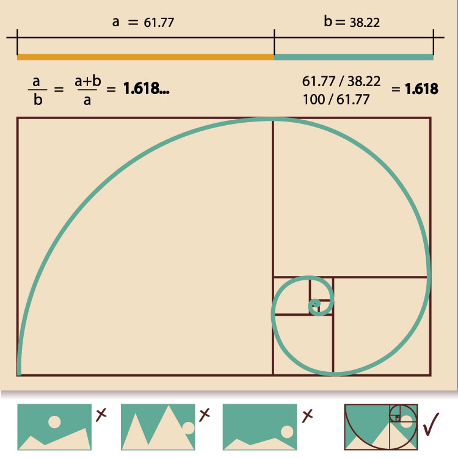
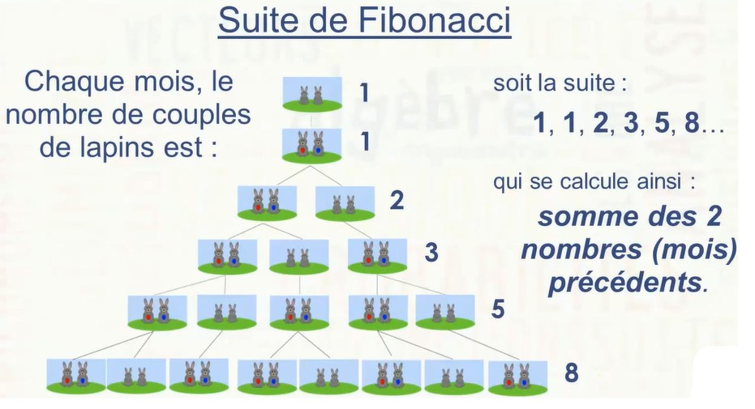
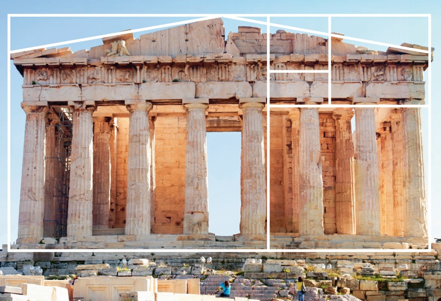

1-On retrouve très souvent des motifs basé sur la suite Fibonacci et sur le nombre d’or,comme:
les cactus,les ananas,... .Donc,elle permet de comprendre la construction de la vie (corps humain,nature)
. Dans certains objets de la nature, on observe aussi très souvent des spirales (spirales logarithmique) dans lesquelles intervient le nombre d’or. Cette spirale d’or s’inscrit dans un rectangle dont les proportions (rapport de la longueur sur la hauteur) correspondent au nombre d’or
(on peut construire une spirale d’or en traçant des 1/4 de cercle dans chaque carré).

Lien de 1ervideo.
2- La suite de fibonacci est un outil pour faire des prédictions mathématiques.
Par exemple: quand on prend l’étude d’une population de lapins, on voit que ça permet de prédire quand on aura un nombre donné de lapins.

3- La suite de Fibonacci peut servir à créer des projets artistiques harmonieux.
De tout temps, le nombre d’or a engendré une véritable fascination pour certains artistes ou intellectuels...
Quelques illustres adorateurs de ce nombre quasi magique :
Phidias
Architecte, sculpteur et peintre,
Phidias (avec Ictinos et Callicratès) est le concepteur et maître d’œuvre du Parthénon.
